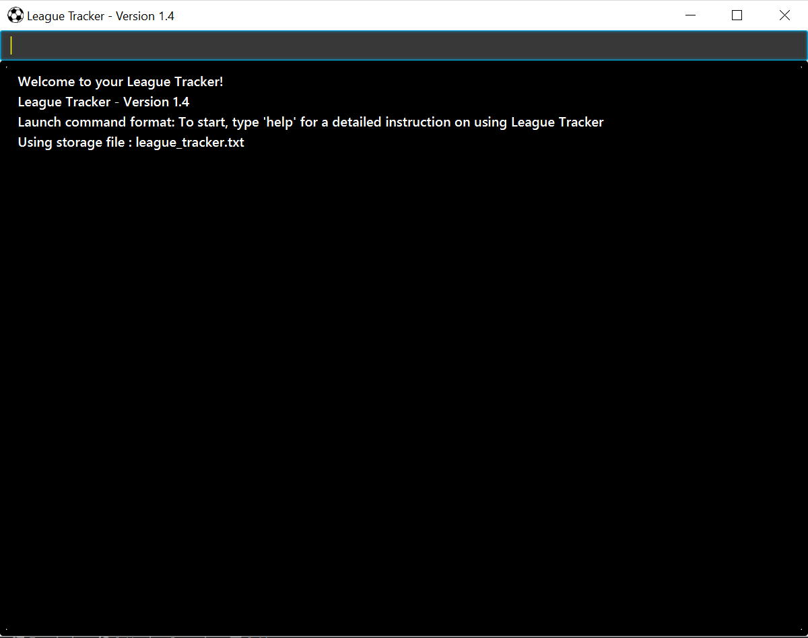

-
This is a CLI (Command Line Interface) League Tracker application written in OOP fashion. It has a very basic GUI.
-
It is a Java application intended for League Operators to manage teams, players, matches records.
Useful Links
Acknowledgements
This application is morphed from AddressBook-Level3 project created by SE-EDU initiative here.
Some parts of this sample application was inspired by the excellent Java FX tutorial by Marco Jakob
Contact Us
-
Bug reports, Suggestions : Post in our issue tracker if you noticed bugs or have suggestions on how to improve.
-
Contributing : We welcome pull requests. Follow the process described here